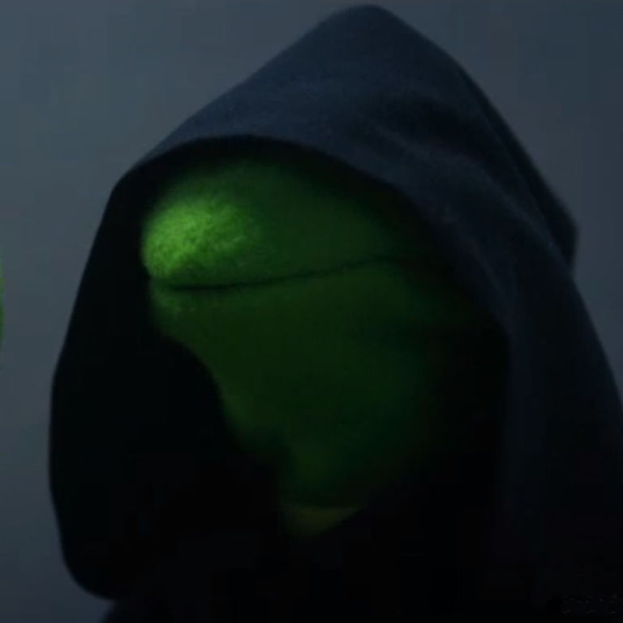

P&B fundada en memoria de Príncipe y Blanca
Inspirados por su amor, lealtad y las lecciones aprendidas de ellos, nuestra misión es rescatar y ayudar a gatos en necesidad, proporcionando hogares seguros y amorosos.
NOSOTROS
MISIÓN
Mejorar la vida de los gatos a través de la difusión, rescate y promoción de la adopción responsable, proporcionando información esencial sobre el cuidado felino. Por ello brindamos ayuda y albergue a gatos en situación de abandono y crisis.
VISIÓN
Crear un gran albergue en Perú que pueda acoger a todos los gatos, tanto domésticos como ferales. Este santuario estará diseñado para proporcionar un ambiente seguro y adecuado para los gatos, evitando que perjudiquen a otras especies locales.
ACCIONES
Difusión de casos
Nos dedicamos a difundir información sobre gatos en situaciones críticas para encontrarles ayuda y hogares temporales.
Divulgación de cuidados
Educamos a la comunidad sobre el cuidado adecuado de los gatos a través de varios métodos informativos.
Rescate y adopción
Coordinamos el rescate de gatos en situaciones de peligro y facilitamos su adopción responsable, enfocándonos en la seguridad y el bienestar de cada gato.
CASOS
Kira
6 meses
En julio del 2022 fue abandonada y vivió un mes en las calles. A pesar de ser extremadamente dócil, por lo cual enfrentó muchos peligros. Hoy vive comodamente con un joven llamado Juan que la consiente.
Viserys
8 meses
En diciembre del 2022 fue abandonado y vagó por semanas hasta que encontró un hogar temporal con una anciana. Desde entonces, ha estado viviendo con ella, recibiendo el cuidado y la atención que necesita.
Aemon
5 meses
En junio de 2023 fue arrojado desde una moto y lloró durante una semana en la esquina donde fue abandonado. Vagó por las calles durante dos meses, siendo golpeado por otros gatos debido a su pequeño tamaño. Un vecino le brindaba alimento hasta que un joven llamado Omar lo adoptó.